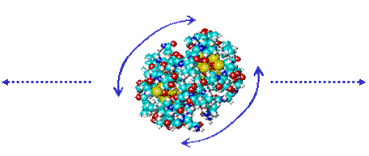
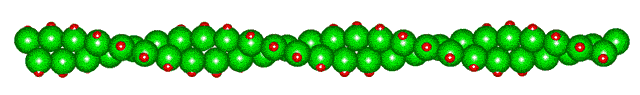
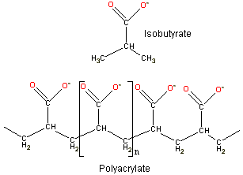
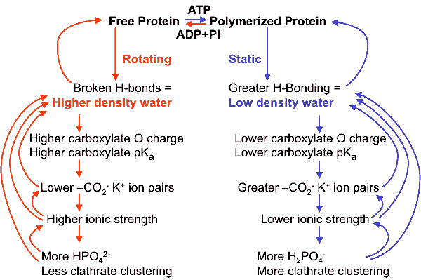
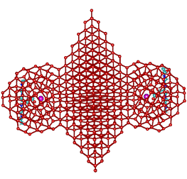
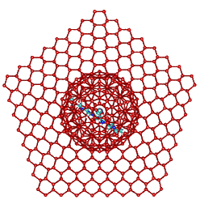
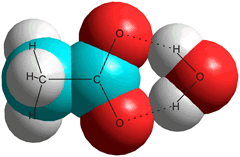

Cytoskeleton in the human cell
re-colorized from wellcomimages
There is a dynamic coupling between intracellular water and active metabolic processes.
 Water transfer across membranes
Water transfer across membranes
 Intracellular solutions contain more K+ ions
Intracellular solutions contain more K+ ions
 Membranes help create a tendency towards low-density water in cells
Membranes help create a tendency towards low-density water in cells
 The effect of intracellular protein on water structuring
The effect of intracellular protein on water structuring
 The importance of protein carboxylate groups
The importance of protein carboxylate groups
 The importance of protein mobility
The importance of protein mobility
 Cooperative conversion of the water structuring
Cooperative conversion of the water structuring
 Actin, tubulins, and the intermediate filaments
Actin, tubulins, and the intermediate filaments
"the molecular structure of water is the essence of all life"
Dr. Albert Szent-Gyorgy, Nobel Prize winner.
How does water cross the membranes that form hydrophobic barriers between aqueous compartments? The answer lies in diffusion and osmosis [4113]. Under 'normal' conditions, the water content of a cell is maintained near-constant. Water diffusion across a cell membrane occurs either by the slow partition process into the lipid bilayers, somewhat enabled by membrane protein, followed by its escape from the other side, or via a faster process involving aquaporins (water-permeable trans-membrane proteins) [4114]. Also, transport of Na+, K+ and other ions and osmolytes are accompanied by the movement of water into and out of the cell. There will generally be water movement in both directions across lipid membranes, but any net water movement is powered by osmosis. The activation energy of water exchange through yeast plasma membranes is about that of a single water-water hydrogen bond, indicating the amount of the water structure that must be lost during its movement across the membranes [4115]. High water permeabilities are found in renal proximal-tubule and red blood cells. Low water permeability is found where there are no aquaporins and with the membrane rich in water-blocking cholesterol molecules.
Natural physiological cell death (apoptosis) involves cell shrinkage with K+ ion loss, whereas accidental cell death (necrosis) causes swelling with water gain, eventually resulting in cell lysis [4178].
[Back to Top  ]
]
"water is an enemy to be excluded as rigorously as possible”
Robert Shapiro, Origins, 1986.
Intracellular water is the water inside cells that bathes all the necessary biological molecules, including proteins and nucleic acids. a This water has severely moderated properties so reducing its chemical and biological activity [4176]. The interior of the mammalian cell is a very crowded environment containing ≈ 250 mg ˣ mL−1 protein, ≈ 110 mg ˣ mL−1 RNA, ≈ 103 m2 ˣ L−1 cytoskeleton: surface, ≈ 250 mM ions, and many other solutes. Consequently, the internal osmotic pressure is high, and the water activity is low. Most water is associated with these structures and there is relatively little 'free' bulk-like water. Crowding affects molecular diffusion conformation, dynamics and kinetics [3426], and the properties of the aqueous environment [3175]; with viscosity ~106 times higher than bulk water and diffusion ~106 times lower than bulk water. Intracellular water is necessarily different from extracellular water [3006]. Aggregation is prevented by the mostly negative charge of the solutes (e.g., proteins) [3941]. There are also differences between sub-cellular compartments, such as the cytoplasm and nucleus [3942]. Cells contain differing amounts of water; dependent more on their purpose (and hence expressed proteins) rather than their source organism (for example, the % water contents of red blood cells are about 64% whether from man or dog whereas frog heart contains 80% but a frog egg only 49% water) [762]. Intracellular water is in a more ordered state (coherent. [3714]) than pure water, as demonstrated by its significantly shorter (NMR) spin-lattice and spin-spin relaxation times [2321]. Very little of this water can be considered as solely a medium [2753] g but is a metabolic reactant, product, catalyst, chaperone, messenger, and controller (see, for example, [1194]). Intracellular water cannot be pressed out of the cell even at 100 MPa and is likely to consist of organized nanoscale water channels rather than a homogeneous gel-like cytoplasm [3633]; the compressed water preferring to be absorbed into the protein structures.
Intracellular water is responsible for the conformations and functions of all biomolecules through direct interaction with their hydration shells [2845, 2921]. However and importantly, the water's structuring may also be controlled by some cellular constituents. Cellular macromolecules ‘‘dance’’ to the tune of intracellular water and, to a more limited extent, vice versa. Water forms an integral part of biomolecular structures and functions [2949]. The water is essential for biomolecular recognition [1787] and orchestrates the cell machinery [1785]. The complexity and organization within the cytoplasm are expressed in a comprehensive review of intracellular water [1191]. An interesting 2017, review has considered the versatility and adaptability of intracellular water in engaging in a wide range of cellular biochemistry [1359]. A key feature of intracellular water is its ability to convert between high and low-density states [1364] (as exemplified by the ESCS equilibrium). Such changes have been linked to the state of autothixotropy [1898]. The extent of intracellular hydrogen bonding can be determined using an amphipathic fluorescent nanodot. This shows time-dependent imaging contrasts due to the different hydrogen bonding extents of the intracellular water. The nanodot’s amphiphilic nature in different local hydrogen-bonding environments produces contrast images in lifetime and directly monitors the extent of the hydrogen-bonding networks [3512]. The assessment of the cellular state in live tissues has been established by microwave dielectric spectroscopy (MDS) in determining the hydration state of the intracellular environment of live Caenorhabditis elegans nematodes. This approach was successful at predicting the protein folding stress-tolerance state of the worms [3974].
An increase in cell size following cell membrane depolarization occurs together with a reduction in water's diffusivity, indicating the very different characteristics that intracellular water appears to possess compared to extracellular water. b Experimentally, this area presents a difficult problem as the properties and functioning of the cell in vivo cannot be readily determined from the sum of its parts in vitro; indeed the commonly practiced in vitro experiments on the homogenized and dilute contents of dead cells may be entirely misleading. For example, CO2 production in metabolizing cells may give rise to complex changes in water movement and osmotic pressure changes as neutral CO2 diffuses readily but ions formed from it on hydration do not [1137], and actively metabolizing cells may be producing a significant amount of their intracellular water [1139]. Study of the live cell is fraught with difficulty as most procedures may alter the in vivo conditions, although dynamic phase microscopy shows promise [1332]. The structure and hydrogen bonding of intracellular water are central to any theory concerning intracellular cell dynamics with intracellular protein dynamics and internal protein fluctuations both slaved to the water dynamics [1856]. Two theories concerning intracellular water have greatly influenced current thinking concerning the complex roles of intracellular water [3992]. These are the 'polarized multilayer theory' of Gilbert Ling [634, 2807], and the 'gel-sol transition' of Gerald Pollack [351, 635]. On this page, the combination of aspartic and glutamic acid ion-pairing with K+ ions, changes in the mobility of key proteins and the natural low-density clustering within the intracellular water are all shown to contribute to intracellular metabolic transitions and information transfer. Both prior theories are accommodated within this hypothesis [1093].
Water in cancerous breast tissue is markedly different from that in healthy tissue, in having more water plus a greater concentration of free hydroxyl groups [2280]. The intracellular water lifetime may be considered as a hallmark of cancer, with cancerous cells showing increased cell volumes as cells undergo proliferation [3495].
[Back to Top  ]
]
The cytoskeleton including a microtubule (largest), an intermediate
filament (knobby one) and two actin filaments (smallest)
Illustration by David S. Goodsell, the Scripps Research Institute
, an intermediate filament (the knobby one) and two actin filaments (the smallest ones). The large blue molecules are ribosomes; Illustration by David S. Goodsell, the Scripps Research Institute")
The different characteristics of the intracellular and extracellular environments manifest themselves particularly in restricted diffusion (see cartoon representing the crowded cytoplasm, right) and a high concentration of chaotropic inorganic ions and kosmotropic other solutes within the cells. Note that both chaotropic inorganic ions and kosmotropic other solutes encourage low-density water structuring. The difference in concentration of the ions is particularly apparent between Na+ and K+ (see below); Na+ ions (2.38 À distant from water O-atoms. [3868] ) creating more broken hydrogen-bonding and preferring a high aqueous density whereas K+ ions (2.76 À distant from water O-atoms [3868]) prefer a low-density aqueous environment [3796]. A 1000-fold preference for K+ over Na+ has been found in a halophilic organism without any energy expenditure but with a highly reduced intracellular water mobility [817]. As explained in the discussion of the Hofmeister effect, and shown by the negative ionic volumes (that is, the addition of the ions reduces the volume of the water, see below), the interactions between water and Na+ are stronger than those between water molecules, which in turn are stronger than those between water and K+ ions. Thus, water may be stripped more easily from the K+ ions, and K+ maintains the solubility of cell components in which carboxylate and phosphate are the principal anions [3796].The differences in surface charge density may explain these comparisons. The interaction strength is reflected in that the distances between the Na+ ions and water are shorter than between pairs of water molecules which are shorter than those between K+ ions and water. Ca2+ ions have even stronger destructive effects on the hydrogen bonding than Na+ ions. K+ ions are preferred within the intracellular environment and are, after water, the second most abundant component of the cell by number [3992]
Ion |
Ionic radius |
Surface charge density |
Molar ionic volume |
Intra-cellular |
Extra-cellular |
Water preference |
|---|---|---|---|---|---|---|
Ca2+ |
100 pm |
2.11 |
-28.9 cm3 |
0.1 μM |
2.5 mM |
High-density |
Na+ |
102 pm |
1.00 |
-6.7 cm3 |
10 mM |
150 mM |
High-density |
K+ |
138 pm |
0.56 |
+3.5 cm3 |
159 mM |
4 mM |
Low-density |
Although somewhat contentious, it has been reported
that the cellular membrane ion-pumps
cannot produce these significant differences in ionic composition without other mechanisms. The (ATP) energy
required appears to exceed the energy that is available to
the cell, and the gradients are maintained in the absence of
intact membranes and the absence of active energy (that is, ATP) production [634, 635].
Also, in contrast to that written in several undergraduate
textbooks, many studies show that cells do not need an intact
membrane to function [635]. Instead,
the intracellular water tends towards a low-density structuring
due to the kosmotropic character of the majority of the solutes,
the confined space within the cell stretching the hydrogen-bonded
water and the extensive surface effects of the membranes [1094].
The ions partition according to their preferred aqueous environment;
particularly, the K+ ions partition into the cells.
Ion pumps must thus be present for other (perhaps fail-safe)
purposes, such as speeding up the partition process after
metabolically linked changes in ionic concentration. [Back to Top  ]
]
Phosphatidylethanolamine
Membrane lipids contain hydrophilic kosmotropic groups such
as the phosphatidylethanolamine, shown opposite, which encourages
the lower density water structuring inside cells. This is particularly
relevant as there is extensive membrane interfacial water within
cells, e.g., liver cells contain ≈ 100000 μm2 membrane surface area. The aqueous interface next to the membranes forms a functional unit linking the membrane to the water-soluble proteins of the cytosol, facilitating the rapid exchange of structural, dynamic, and physiological information [1553]. [Back to Top  ]
]
The degree of density lowering inside cells is determined by the solutes, their concentration and the conformations and state of motion of the proteins; mobile proteins creating more disorder in the clustering compared with more static proteins. Many intracellular proteins are globular, so retaining rotational entropy notwithstanding the crowded environment. Water has conflicting effects in the mixed environments around proteins. Weak hydrogen bonding between the protein and water molecules allows greater flexibility and strong hydrogen-bonding endows the protein with greater stability and solubility. There is an ordered structure in the first shell around the protein, with both hydrophobic clathrate-like and hydrogen-bonded water molecules helping the other optimize water's hydrogen-bonding network. Changes in the proteins' conformations may result in water influx into the cell or efflux from the cell [949] and density changes. Protein carboxylate groups are generally surrounded by strongly hydrogen-bonded water, whereas the water surrounding basic chaotropic groups (arginine, histidine, and lysine) tends towards a clathrate structuring. Clathrate formation over hydrophobic areas maximizes non-bonded interactions without loss of hydrogen bonds, whereas carboxylate groups usually only fit a collapsed water structure creating a reactive fluid zone. The diffusional movement of the proteins will cause changes in the water structuring outside the first hydration shell.

Translational diffusion involves breaking water-water links at a distance from the surface whereas rotational diffusion involves breaking close water-water and protein-water links [640]. The surface area for translation and rotation is the same, but the velocity differential is constant for all radial distances (r) for translation but varies with r2 with rotation.
Half the hydrogen bonds are ruptured at the breaking surface, creating a zone of higher density water (as explained elsewhere). Protein rotation thus creates a relatively close and surrounding high-density water zone with many broken hydrogen bonds, as shown by some NMR studies. The volume of this interfacial region of perturbed water around the proteins is comparable to the volumes of the proteins.
Cells control the spatiotemporal organization of their many components through aqueous biphasic separation (liquid-liquid phase separation, LLPS) [4144] that take part in many processes including cell division, signal transduction, higher-order genome organization and gene regulation. Proteins are responsible for the major organizational driving force within cells and produce liquid-like membrane-less organelles called biomolecular condensates, such as nucleoli [3939]. It has been demonstrated that the concentration of weak inter-protein attractions determines the stability of these multi-component condensates [3939]. The protein nucleophosmin is known to be a key driver of nucleolar phase separation.
[Back to Top  ]
]
The side-chain carboxylate groups (that is, aspartic and glutamic acids) in proteins possess high dipole moments. They contain two oxygen atoms that are nearer to each other (≈ 2.23 Å) than occurs between water molecules in bulk liquid water (≈ 2.82 Å). These carboxylate oxygen atoms, preferably hydrogen bond ≈ 4 [1169] to ≈ 6 [1781] water molecules which account for about 40% of the hydration-free energy, with the remainder mainly derived from outer aqueous shells [1781 a]. f This hydrogen bonding causes a localized high-density water clustering due to the closeness of the water molecules as they gather around the carboxylate groups [1063]. The binding of water to the two oxygen atoms is anti-cooperative, and instantaneously the oxygen atoms and C-O bonds are non-identical [1587].
Such hydrogen-bonding induces a more negative charge on the carboxyl oxygen atoms, increasing the group's dipole. This leads to an increase in the carboxylate pKa, as is shown below.
Carboxylate group dipoles versus their pKa
The atomic charges and geometry of related carboxylate groups were determined using ab initio molecular dynamics with the 6-31G** basis set in Hyperchem. The dipoles of the carboxylate groups were calculated in Debye units. A linear trend can be seen between the carboxylate group dipole and the pKa of the acids: a, trifluoroacetate; b, trichloroacetate; c, dichloroacetate; d, difluoroacetate; e, fluoroacetate; f, chloroacetate; g, thioglycollate; h, thiolactate; i, glycollate; j, lactate; k, 3-thiopropanoate; l, acetate; m, 2-methylpropanoate; n, propanoate; o, 2,2’-dimethylpropanoate. Most of the acidity constants were obtained from [1142].
Carboxylate groups pKa and oxygen charge
If the charges on the carboxylate oxygen groups are reduced by neighboring electron-withdrawing substituent groups or imposed negative electric field, the pKa is reduced. Note that the charge on the oxygen atoms lies between that on the ionic kosmotrope sulfate (–0.87; with hydrogen bonds to water) and the ionic chaotrope perchlorate (–0.71; preferring to be surrounded by clathrate water). Thus, only a 5% reduction in the negative charge on the carboxylate oxygen atoms is necessary to switch from kosmotropic to chaotropic behavior. It is found that Na+ ions prefer binding to the weaker carboxylate groups (pKa > 4.5),, whereas K+ ions prefer the stronger acids (pKa < 3.5) [634].
It should be noted that, in the absence of an aqueous solution, Na+ ions bind with a covalent character to the glutamate carboxylate groups, whereas K+ ions do not [3070].
Raman multivariate curve resolution vibrational spectroscopy measurements demonstrate that Zn2+ binds about four times more strongly to acetate than Ca2+ or Mg2+ [4140].
[Back to Top  ]
]
Part of the F-actin structure
structure from Holmes KC and Eschenburg S
Actin is a highly conserved and widespread eukaryotic protein (42-43 kDa) e responsible for many functions in cells. Non-muscle cells contain 5-10% (of all protein) actin, whereas muscle cells contain about 20%. All actin molecules contain a conserved acidic N-terminus with several neighboring aspartic or glutamic acids (emphasized right) and a post-translation acetylated terminal amino group (for example, N-Ace-Asp-Glu-Asp-Glu in rabbit muscle α-actin). When actin forms a filament structure, this highly charged grouping is placed on the outer exposed edge of the helix, where it may be additionally used as a binding site for other proteins, such as myosin. The positionings of the acidic N-terminal antennae are shown in red in the cartoon below. Tubulin and the intermediate filaments are further structural proteins that form immobile structures with ordered hydration within cells, possessing conserved acidic groupings that serve similar functions. e
Cartoon of the semi-flexible actin filament, showing the positioning of the acidic N-termini (shown red)
The structural transitions of F-actin upon ATP hydrolysis at near-atomic resolution have been revealed by cryo-EM, demonstrating how ATP hydrolysis links to F-actin’s conformational dynamics and protein interaction [3295]. Actin is converted between a freely rotating molecule (G-actin; about 4 - 6 nm diameter) and a static right-handed double-helical protein filament (F-actin; up to several microns in length) by ATP; a process involving the conversion of an α-helix to a β-turn in one of the structural domains [636]. Each molecule of the freely rotating G-actin can influence a large volume of water within its effective radius of gyration, causing a reduction in the intracellular low-density aqueous clustering. Filamentous actin (F-actin) is a much more ordered structure creating more order in its surrounding water. Protein fibers trap water, which has decreased entropy. The water has to form bonds with a more negative enthalpy to keep the water activity constant. This results in stronger bonds, causing significant structuring and lower density. Also, the enclosure of the water involves capillary action forming 'stretched' confined water that is much more highly structured (hence lower density) than the bulk water.

As overlapping fields from nearby groups enhance counter-ion association, F-actin's extensive negatively charged N-terminus causes the partitioning of cations into its vicinity, similar to that well known from iimmobilized enzyme studies. This partitioning effect was initially shown by Kern [638], who established that the activity of Na+ with isobutyric acid is >0.9, whereas similarly with polyacrylate, it is <0.32, thus proving the more significant partitioning of cations within the microenvironment of the multiply-charged polymer.
Na+ and K+ ions behave differently when close to the carboxylate groups; K+ ions prefer forming ion pairs whereas Na+ ions form solvent separated pairings [637, 2035]. This is due to the Na+ ions holding on to their water strongly. The inner shell polarized water molecules are ideally situated for forming strong hydrogen bonds to the carboxylate oxygen atoms. The K+ ions prefer an inner shell clathrate water structuring that is reinforced by its direct ion-pairing to the carboxylate group. Also, Na+ ions cannot participate in clathrate structuring, whereas K+ prefers this environment [641]. As the distance between the neighboring amino acid carboxylate groups (about 7.3 Å) is about the same as the diameter of clathrate water clusters (about 7.6 Å), extensive ion-pairing of the adjacent carboxylate groups may be accommodated by neighboring clathrate clustering. K+ RCO2− pairs move from solvent separated to ion-pair with the reduction in the pKa. K+ ions prefer strong acids (that is, low pKa), whereas Na+ prefers weak acids (that is, higher pKa). Direct ion-pair association discourages aqueous hydrogen bonding to the carboxylate oxygen atoms but encourages clathrate formation surrounding the ion-paired carboxylate group.
Note that the association of K+ with proteins' aspartate and glutamate groups is the central theme of Ling's fixed charge hypothesis [634]. He presented as evidence for the molecular mechanism of the association, including (1) the low intracellular electrical conductance, (2) the strongly reduced mobility of intracellular K+ ions, (3) the altered X-ray absorption fine edge structure, (4) the widely different activity coefficients of K+ ions in different cells, (5) K+ ion absorption shows one to one stoichiometric absorption to the carboxylate groups, and (6) identification of K+ ion absorption sites as aspartate and glutamate side chains.
Equilibria involving the static polymerized protein
Under conditions when the carboxylate groups possess high pKa, both K+ and Na+ form solvent separated species when partitioned into the carboxylate environment. This gives a preference for Na+ and high-density water. However, rotation of the protein will sweep such ions and their associated water away. If the protein stops rotating, Na+ ions tend to destroy any low-density structuring around carboxylate groups of the protein. However, the intracellular Na+ ion concentration is usually far lower than that of K+ ions (see above). At low pKa, K+ ion pairs to carboxylate groups, particularly when partitioned into their microenvironment due to the presence of several contiguous acidic amino acids.
This hypothesis is compatible with the view that the water on either side of a membrane is different, and this encourages the differences in K+ and Na+ concentrations [3006].
Equilibria involving the freely rotating protein
When ion-paired, the hydrogen bonding to the carboxylate oxygen atoms is prevented, and a surrounding clathrate structuring is preferred. The clathrate clustering can signal their state to other neighboring carboxylate groups (see later).
When the static protein filaments convert to freely diffusing proteins, the ions are swept away due to the multiple contacts with surrounding water molecules and their inability to keep up with the rotating protein at increasing radial distances. This results in the conversion of any localized clathrate water structuring to high-density water involving hydrogen-bonded carboxylate groups.
[Back to Top  ]
]
The binding of K+ by the carboxylate groups lowers the ionic strength of the intracellular solution. As this ionic strength decreases, the pKa of phosphate groups increases resulting in converting the more kosmotropic intracellular doubly-charged HPO42− ions to the singly-charged more chaotropic H2PO4− ions. d All intracellular phosphate entities (about 100 milli-equivalents L−1) h will behave similarly, so increasing the tendency towards the low-density water. Thus the cooperative effects of the change between static filament formation and freely-diffusional protein can be summarized as below.
Cooperative changes creating low-density water when actin is polymerized

Further support for this process is given by F-actin becoming more static in the presence of about 100 mM K+ [642].
Cartoon showing the cooperative buildup of low-density clustering around
K+ on-paired carboxylate groups in proteins
Only the oxygen atoms of the water network are shown above.
The diameter of the cylindrical water cluster appears to be less than 3% different from that invoked to explain the hydrophobic effect between flat hydrophobic surfaces and to extendi over some tens of nanometers [1316], indicating that the same clustering may be involved in both cases.
The cooperative nature of this signaling explains the signal amplification seen in the conduction of impulses along the microtubules and actin [1434], e and perhaps linking to other parts of the cytoskeleton e [1307]. The importance of this cannot be overstated as microtubules are implicated in information processing and memory [1307]. The structuring of water may, therefore, be critical for the conscious mind [1337]. Dynein (a cytoskeletal motor protein that moves along the cytoskeleton's microtubules) binds to tubulin through two coiled-coil stalks and a stalk head. The energy used to alter the head binding and propel cargo along tubulin is supplied by ATP, 1,500 amino acids away. The energetic connection over this microscopically vast distance has been explained by surface water waves, which transmit the chemical energy over very long distances [4112].
.
Although the clustering (above right) involves a significant drop in entropy (increased coherence) , this is compensated by a more negative enthalpy due to the stronger bonding of the fully tetrahedral hydrogen-bonded structure. The phase transition between ordered and disordered water has been regarded as a mechanism to release energy for biological work rather than the membrane (pump) theory [1960]. It is consistent with Ling's association-induction polarized multilayer model [634], c as can be seen from the net dipoles emanating from the clathrate arrangement, but offers a more realistic explanation. The initial icosahedral size (3 nm diameter) also equals the water domain size proposed by Watterson [546]. Extensive (1.4 nm) long-lived (> 300 ps) aqueous dipole arrangements between biomolecules have been found in molecular dynamics studies [329]. Further support for this model is given by several studies concerning different types of intracellular water, such as "normal" bulk and "abnormal" osmotically inactive interfacial water [639]. Also, the water in the extreme halophile Haloarcula marismortui, which contains unusually large amounts of bound intracellular K+ ions, shows particularly slow translational diffusion [1253].
Idealized tetrahedral clustering caused by neighboring K+ carboxylate ion pairs
 
These orthogonal diagrams show the maximum limit of fully
tetrahedral water clustering due to the cooperative clustering
(see above) from two K+-carboxylate ion-pairs.
This fully tetrahedral structuring, which resembles a mixture
of hexagonal and cubic ice structures but with 5-fold symmetry
(such that it cannot form extensive crystals), is idealized in the
cartoons. An interactive structure is given (Jmol).
Extension of the clathrate network and its associated low-density water enables K+ ion binding to all aspartic and glutamic acid groups, not just the key ones within the extensive acidic centers. Thus, the gel-sol transition of Pollack [635] is interpreted as the conversion to low-density water clustering (the gel state) due to clathrate clustering around K+-carboxylate ion-pairs. The changes in the cell's functional state and its organisms have been shown to be reflected in the changes in the cell's refractivity [1997]. Indeed, the stiffness of the cytoplasm depends on the structure of the water, as shown by changing the H2O water to D2O heavy water when the intracellular relaxation frequency reduces by between two and four orders of magnitude depending on the timescale [1856].
In the presence of raised Na+ or Ca2+ ionic concentrations, as occasionally occurs during some cell functions, these ions will replace some of the bound K+ ions. These newly-formed solvent-separated Na+ or Ca2+ ion-pairings destroy the low-density clathrate structures and initiate a cooperative conversion of the associated water towards a denser structuring.
In conclusion, the information transfer within the cell involves the following:
a Philosophical, historical, and scientific views of water in living systems have been reviewed [1011] [Back]
b The cytoplasm of cells is described in [892]. Nuclear magnetic resonance signal widths are much broader inside cells, showing that intracellular water is far more structured than extracellular or pure water; for example, see [884]. For a review of the relationship between the intracellular water and the cytoskeleton, see [880]). It is noteworthy that the amount of 'free' versus 'bound' water [969], the concentration of K+ ions, and the cytoskeleton are all intimately linked together by the differences between normal and cancer cells [1333]. [Back]
c The polarized multilayer theory relies on the hypothesis that static proteins in the cell change their secondary structure from compact to extended forms so that the newly formed extensive lengths of polypeptide 'polarize' the water using their amide (N-H and C=O) backbone. Although there is support for the existence of polarized multilayers of water [634], there is no experimental support for this explanation for their presence. Indeed, most experimental data is contra-indicative, resulting in only minority support from scientists in this area. [Back]
d The chaotropic/kosmotropic nature of these ions has been confirmed by FTIR [1072]. [Back]
Eukaryotic cells are dynamic structures, able to move, and divide. Such activities are achieved through the use of cytoskeletal filaments (actin, tubulins, and intermediate filaments [3051], see the cartoon above) and molecular motors (such as myosin) within the cell. The filaments lengthen, shorten and cross-link, regulated by other proteins. The actin filament is a helical ribbon formed of two parallel helical strands that each comprise a linear strand of small G-actin proteins (42 kDa) molecules with uniform orientation along the ribbon axis. The ribbon has a width of ∼8 nm, a thickness of ∼5 nm, and a helical repeat of 36 nm. An analysis of the known actin structures from the UniProt Knowledgebase showed the 32 complete α-actin structures recorded from fish, birds, snakes, and mammals all to have the conserved acidic N-terminal structure Acetyl- D/E- D/E- D/E- D/E- T/S/V- T- A- L- V- C- D- N- G- S- G- L- V- K- A- G- F- A- G- D- D- A- P- R- A- V- F- P- S- I- V- G- R- P- R- H- Q- G- V- M- V- G- M- G and the 70 complete β- and γ-actin structures recorded, from a similar range of species, to all have the conserved and closely related N-terminal structures of Acetyl- D/E- D/E- D/E- I/V/T- A/T- A/S- L- V- V/I/C- D/A- N- G- S- G- M/L- C- K- A- G- F- A/G- G/R- D- D/G- A- P- R- A- V/A- F- P- S- I- V- G- R- P- R- H- Q- G- V- M- V- G/R- M- G with even the variations limited to one or a very few molecules.
Tubulin showing the α/β units with acidic C-termini (red)
Eukaryotic tubulin is another structural protein that forms immobile structures with ordered hydration within cells [689]. It forms fat hollow and stiff microtubules (≈ 25 nm in diameter, containing low-density water), making tracks through the intracellular space for the movement of organelles. These tubular structures are built up from pairs of similar subunits (α and β), each of about 450 amino acids [1140]. Tubulins have a GTP binding domain near their N-terminal and two separate β-sheets each surrounded by α-helices. The microtubules are formed from head to tail arrangement of α/ β dimers with the beta-subunit GTP at the open end. Only this GTP is hydrolyzed following polymerization. Outside the molecular core, two exterior anti-parallel α-helices lead to highly acidic C-termini, which are thus situated outside of the microtubule and away from the tubulin surface [1306]. The α-tubulin structure is highly conserved with C-terminal consensus sequence - A- R- E- D- M- A- A- L- E- K- D- Y- E- E- V- G- V- D- S- V- followed by an extremely variable but highly acidic C- terminus exemplified by the human α- tubulin (type ‘ubiquitous’) structure - E- G- E- G- E- E- E- G- E- E- COOH. The β- tubulin structure is also highly conserved with C- terminal consensus sequence - A- E- S- N- M- N- D- L- V- S- E- Y- Q- Q- Y- Q- D- A- T- A- followed by an extremely variable highly acidic C- terminus exemplified by the human β- tubulin (type ‘4Q’) structure - E- E- E- E- D- E- E- Y- A- E- E- E- V- COOH. As with the actins, these examples indicate that very strongly conserved structures exist for tubulins except for at an end (here the C-terminus) where glutamic acid and aspartic acid occur interchangeably and in variable but always very acidic sub-structures. Improper functioning of tubulin has been linked with intracellular water clustering in the origin of cancer [1901].
Vimentim tetramer fragment, a type III intermediate filament
Intermediate filaments are fibrous, flexible, and elastic proteins formed mainly from coiled coils (‘ropes’, ≈ 11 nm diameter) of multi-stranded acidic α-helices [1141]. There are some families of associated proteins such as the nuclear lamins, sarcomere desmins, neuron neurofilaments, and epithelial cytokeratins. In addition, the vimentins (see right) generally support the organelles and maintain cellular integrity. All these proteins possess α-helical central ‘rod’ domains (≈ 48 nm long) that contain about 310 amino acids plus more variable end domains,. At the same time, some acidic groups form salt links with basic groups in other strands to build up and lengthen the resulting ‘elastic rope’ structure, there exists an excess of acidic groups on the surface of the filaments. Within the α-helices are acidic bulges (formed from single π-helical loops) containing clusters of three glutamic acids within four residues and creating flexible ‘linker’ regions. As different strands come together to form the fibrous ‘ropes’, these acidic clusters are grouped with contributing acidic clusters from about 20 helices on the surface of the filaments. [Back]

f Time-resolved infrared pump-prime spectroscopy of acetate in D2O suggests the bridge structure (right) as the most stable (single-hydrated) structure [1804], but other water molecules are also involved.
The optimal configurations, energy parameters, and typical vibrational frequencies of the hydrates of the acetic acid and acetate molecular hydrates have been calculated using density functional theory. The preferred structures CH3COOH⋅(H2O)2, CH3COOH⋅(H2O)8, CH3CO2−⋅(H2O)2, CH3CO2−⋅(H2O)6, and CH3CO2−⋅(H2O)16 [3151]. [Back]
g Ultrafast vibrational spectroscopy and dielectric-relaxation spectroscopy have shown somewhat higher amounts of bulk-like water in Escherichia coli and Saccharomyces cerevisiae [3494]. [Back]
h The equivalent of an acid supplies one mole of hydrogen ions (H+) in an acid-base reaction. [Back]
[Back to Top  ]
]
Home | Site Index | Protein hydration | Nucleic acid hydration | Aqueous biphasic systems | LSBU | Top
This page was established in 2004 and last updated by Martin Chaplin on 6 October, 2021